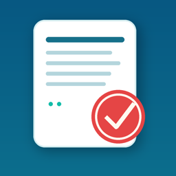

ESTIMATE / INVOICE / RECEIPT
見積・請求・領収を、
iPhoneだけで。
かんたん請求・領収は、個人事業主や小さな会社のための書類作成アプリです。見積書・請求書・領収書・納品書・発注書・検収書を、10言語・世界の通貨でPDFにしてその場で送れます。
App Store 近日公開主な機能
- 01
6種類の書類
見積書・請求書・領収書・納品書・発注書・検収書をPDFで作成。番号は自動で振られます。
- 02
ワンタップ変換
見積書→請求書、請求書→領収書へ、宛名と明細を引き継いで変換。
- 03
10言語・世界の通貨
書類ごとに言語と通貨を選択。税率も自由に設定でき、税率別に自動集計します。
- 04
印鑑を貼れる
印鑑の写真から白い背景を消して、PDFに貼り付けます。
- 05
入金管理・定期請求
一部入金や残高を記録。毎月の請求書も自動で作成します。
- 06
メール・LINEで送付
メール添付やiPhoneの共有メニューから、そのまま送れます。